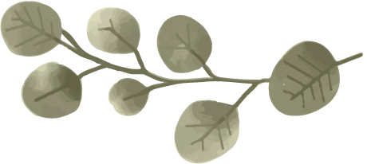

«وَمِنْ آيَاتِهِ أَنْ خَلَقَ لَكُم مِّنْ أَنفُسِكُمْ أَزْوَاجًا لِّتَسْكُنُوا إِلَيْهَا وَجَعَلَ بَيْنَكُم مَّوَدَّةً وَرَحْمَةً»
«Uning oyat-belgilaridan biri — sizlar taskin topishingiz uchun sizlarga o‘z jinsingizdan juftlar yaratishi va o‘rtalaringizda do‘stlik va mehribonlik paydo qilganidir»
(Rum surasi, 21-oyat)

Ikki qalb, bir taqdir, bir umrga tutashgan muhabbat...
Sizni hayotimizning eng unutilmas va baxtli kunida —
Visol oqshomimizda
biz bilan birga bo‘lishga taklif etamiz.
Quvonchimizga sherik bo‘lib, baxtimizga guvoh bo‘lishingizdan mamnun bo‘lamiz!
To'y Dasturi va Vaqti
Ushbu qutlug' kunlarni birgalikda nishonlash uchun barcha yaqinlarimizni lutfan taklif qilamiz:
21-Noyabr
Visol Oqshomi — Boshlanishi
Kelin-kuyovning tantanali kirib kelishi, oq fotiha, eng sara kuy-qo'shiqlar va to'y bazmi.
22-Noyabr
To'y Tantanalari Davomi
Qadrdon do'stlar, qarindoshlar va aziz mehmonlar davrasida ko'tarinki ruhdagi shodiyona oqshomi.
To'y O'tkaziladigan Manzil
Xolmurod to'yxonasi
Manzil: G62X+HJ2, Unnamed Road, Khayravat, Oʻzbekiston
(Mehmonlarimiz qulay yetib kelishlari uchun barcha qulayliklar va keng avtoturargoh mavjud)
Taklifnomani Yaqinlarga Ulashish
Quvonchimizga sherik bo'ladigan barcha qadrdonlarimizga ushbu taklifnomani yuborishingiz mumkin: